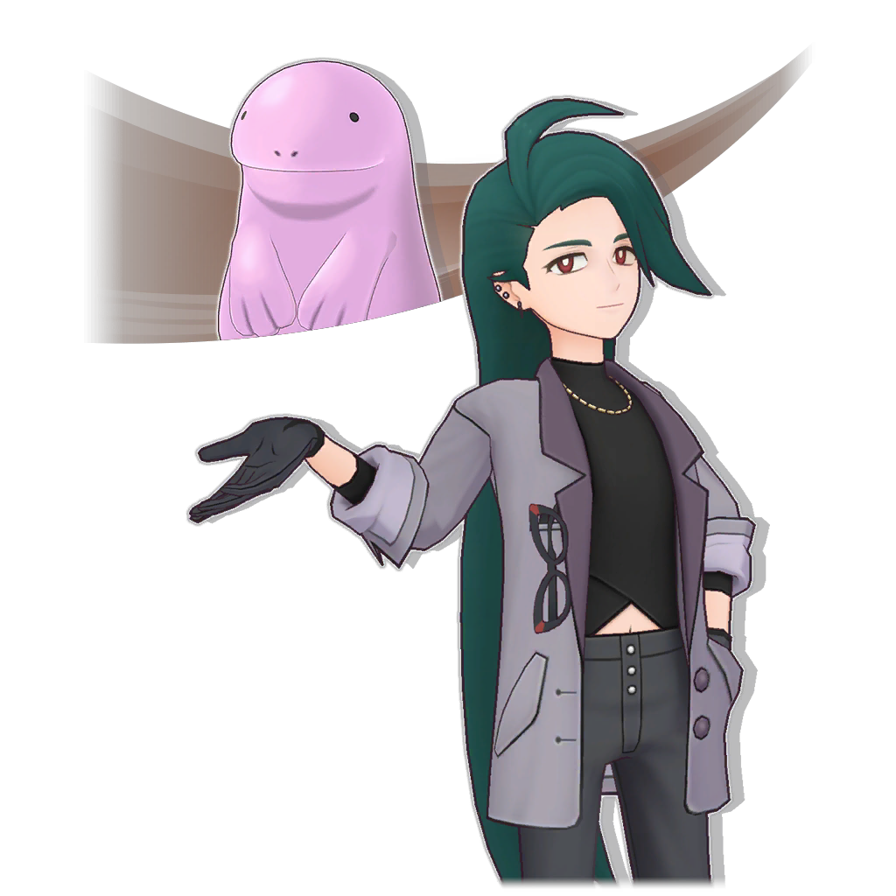
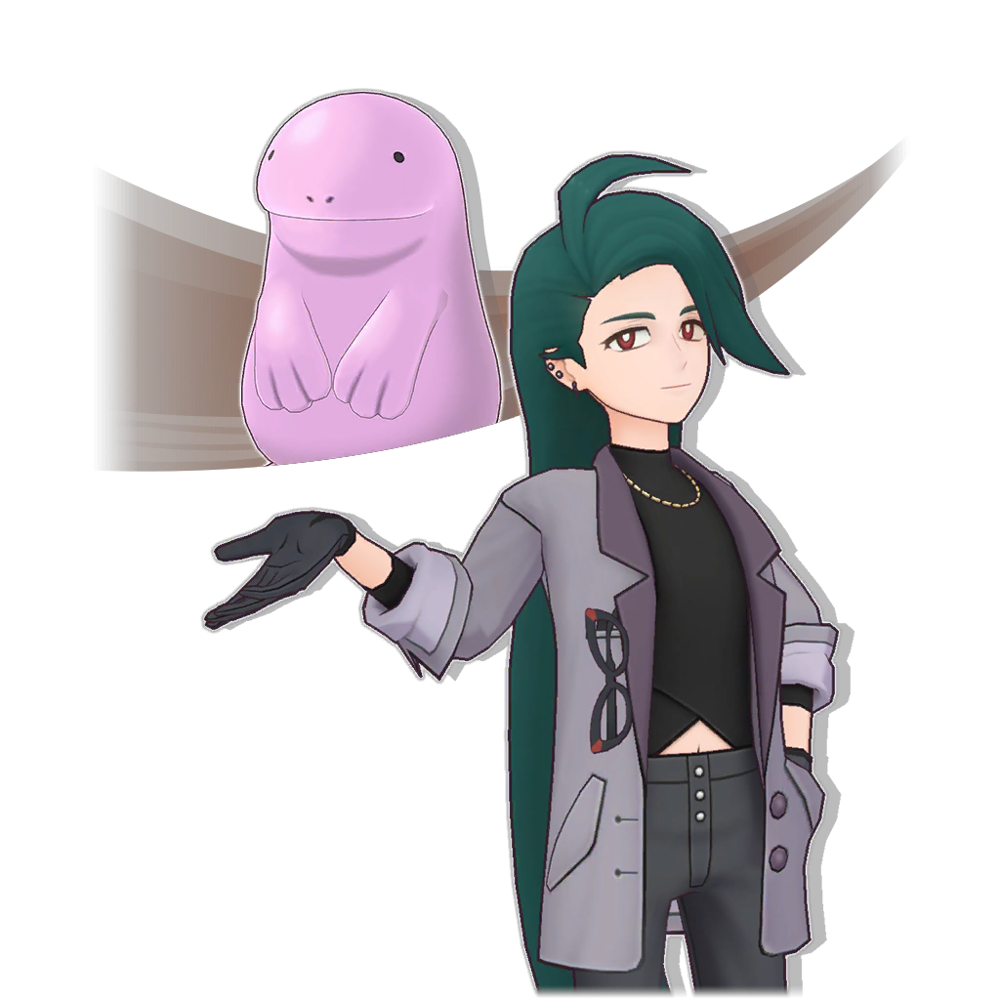

2025/07/27 14:00 - 2026/01/27 14:00
必得盛典限定★５ 票券專用拍組搜尋

2026/01/27 14:00 - 3000/01/01 08:00
盛典限定自選★５ 票券專用拍組搜尋

2026/01/27 14:00 - 3000/01/01 08:00 必得大師盛典 票券專用拍組搜尋
2026/01/27 14:00 - 3000/01/01 08:00
必得盛典限定★５ 票券專用拍組搜尋
2026/01/30 14:00 - 2026/02/17 14:00
相片邊框 獲得任務
獲得特別的 相片邊框吧！
使用獲得的邊框 製作喜歡的相片吧！

2026/01/30 14:00 - 2026/02/17 14:00 劇情活動 表達謝意的特別服裝 剛石和辛俐在煩惱 該如何表達謝意 秋明和阿楓 傾聽了兩人的煩惱……
2026/01/30 14:00 - 2026/02/24 14:00
辛俐季節限定 必得拍組搜尋

2026/01/30 14:00 - 2026/02/17 14:00 辛俐季節限定 步步升拍組搜尋 
2026/01/30 14:00 - 2026/02/17 14:00 辛俐精選 季節限定拍組搜尋 開心度過感謝日的辛俐！ 不要忘了確認 步步升拍組搜尋的禮物！ 
2026/01/30 14:00 - 2026/02/24 14:00 辛俐季節限定 出現機率提升拍組搜尋
2026/02/01 14:00 - 3000/01/01 08:00 訓練家沙龍更新 可以邀請 越橘了！ 與越橘＆酷豹成為夥伴 並邀請他們來沙龍吧！
2026/02/01 14:00 - 2026/03/01 14:00
每日搜尋

2026/02/01 14:00 - 2026/02/24 14:00 剛石季節限定 必得拍組搜尋
2026/02/01 14:00 - 2026/03/01 14:00 vol.42 每月群星盛典
2026/02/01 14:00 - 2026/02/17 14:00 剛石季節限定 步步升拍組搜尋
2026/02/01 14:00 - 2026/02/17 14:00
剛石精選 季節限定拍組搜尋
開心度過感謝日的剛石！ 不要忘了確認 步步升拍組搜尋的禮物！

2026/02/01 14:00 - 2026/02/24 14:00 剛石季節限定 出現機率提升拍組搜尋
2026/02/02 14:00 - 2026/03/02 14:00 冠軍對戰 ＶＳ 帕底亞 挑戰帕底亞的 四天王與冠軍！ 和帕底亞的強敵們 展開激烈的對戰吧！
2026/02/02 14:00 - 2026/03/02 14:00 ＶＳ 帕底亞
2026/02/03 14:00 - 2026/02/19 14:00
劇情活動 為小小勇氣獻上感謝之花
為了在感謝日送禮 而製作花束的米依和莉佳……
感應到感謝之情的寶可夢 出現在兩個人的面前

2026/02/03 14:00 - 2026/02/19 14:00 季節限定 步步升拍組搜尋
2026/02/03 14:00 - 2026/02/19 14:00 大型精選 季節限定拍組搜尋 季節限定拍組 再次登場！ 步步升拍組搜尋 也同時開跑！
2026/02/03 14:00 - 2026/02/26 14:00 季節限定 出現機率提升拍組搜尋
2026/02/06 14:00 - 2026/02/19 14:00 超高難度對戰活動 傳說冒險 傳說冒險 開跑！ 在傳說對戰連續戰勝３隻寶可夢， 獲得特別潛能必得餅乾吧！
2026/02/06 14:00 - 2026/02/19 14:00
連續１１次＋自選★５ 盛典限定拍組搜尋

2026/02/10 14:00 - 2026/02/28 14:00 劇情活動 你好！辛俐姐姐就是我啦 鎯琊想要推廣 帕希歐的特色點心 辛俐推薦讓土王成為 產品包裝設計的寶可夢，但……
2026/02/12 14:00 - 3000/01/01 08:00
究極高難度對戰 追加任務！
支配破壞之力的坂木 追加任務！
完成任務 來獲得報酬吧！

2026/02/17 14:00 - 2026/03/31 14:00
雙重上線週年搶先慶 現正舉辦中！！
這次的週年慶 是雙重上線週年慶！
多項活動開跑！ 詳情請到通知確認吧！

2026/02/17 14:00 - 2026/03/31 14:00
特別拍組活動 克拉韋爾＆新葉喵
與克拉韋爾＆新葉喵 成為夥伴吧！
交換道具來提升克拉韋爾＆新葉喵的 招式等級以強化他們！

2026/02/17 14:00 - 2026/02/28 14:00 慶祝阿爾宙斯篇更新 特別對戰活動 慶祝阿爾宙斯篇更新的 特別活動！ 收集活動點數 來獲得報酬吧！
2026/02/17 14:00 - 3000/01/01 08:00 主線劇情 追加阿爾宙斯篇第８章！ 「阿爾宙斯篇」 追加新劇情！ 現在立刻來確認 主線劇情吧！
2026/02/17 14:00 - 3000/01/01 08:00 帕希歐道館對戰 關都館主大集合 帕希歐道館對戰 即將開跑！ 和訓練家道館的大家 一起為與道館館主的對戰做準備吧！
2026/02/17 14:00 - 2026/04/07 14:00 雙重上線週年搶先慶！ 必得１對盛典拍組！ 免費連續１０次拍組搜尋 雙重上線週年搶先慶 登入獎勵現正舉辦中！ 在第1、5、10、15、20天登入遊戲 即可獲得必得盛典拍組的搜尋券！
2026/02/17 14:00 - 2026/03/14 14:00 小霞精選 阿爾套裝盛典 加深牽絆的小霞！ 以阿爾套裝拍組登場 不要忘了確認 付費限定的附好禮拍組搜尋！
2026/02/17 14:00 - 2026/03/14 14:00
附特別贈禮 小霞精選 阿爾套裝盛典

2026/02/17 14:00 - 2026/04/07 14:00
雙重上線週年搶先慶！ 含盛典限定拍組！ 免費連續１０次拍組搜尋

2026/02/17 14:00 - 2026/03/10 14:00 帕希歐道館對戰 關都館主大集合
2026/02/17 14:00 - 2026/03/31 14:00 必得共計5對以上盛典限定拍組 最多可免費連續200次拍組搜尋
2026/02/17 14:00 - 2026/04/04 14:00 訓練區域 報酬增加活動
2026/02/19 14:00 - 2026/02/28 14:00 上線6.5週年搶先慶 週年倒數對戰！ 遊戲即將上線6.5週年！ 週年倒數對戰！ 每天都會追加僅限１天的對戰。 成功過關對戰來獲得報酬吧！
2026/02/19 14:00 - 2026/03/14 14:00 小剛精選 阿爾套裝盛典 加深牽絆的小剛！ 以阿爾套裝拍組登場 不要忘了確認 付費限定的附好禮拍組搜尋！
2026/02/19 14:00 - 2026/03/14 14:00
附特別贈禮 小剛精選 阿爾套裝盛典

2026/02/20 14:00 - 2026/02/27 14:00 帕希歐道館對戰 關都館主大集合 帕希歐道館對戰 開跑！ 和訓練家道館的大家 一起挑戰道館館主吧！
2026/02/20 14:00 - 3000/01/01 08:00 道館專用必得★５拍組 搜尋券專用拍組搜尋
2026/02/21 14:00 - 2026/02/28 14:00 超高難度對戰活動 傳說冒險 傳說冒險 排名結果現正公開中！ 結果究竟如何？ 現在就去確認排名吧！
2026/02/25 14:00 - 2026/02/26 14:00
每月舉辦：特別活動 群星盛典日樂無比
今天是群星盛典日！ 特別活動現正舉辦中！
群星盛典日僅限１次！ 開心拍組搜尋也別錯過！

2026/02/25 14:00 - 2026/02/26 14:00
群星盛典日僅限１次！ 開心拍組搜尋

2026/02/25 14:00 - 2026/02/26 14:00
群星盛典日僅限１次！ 必得★５拍組搜尋Ａ

2026/02/25 14:00 - 2026/02/26 14:00
群星盛典日僅限１次！ 必得★５拍組搜尋Ｂ

2026/02/25 14:00 - 2026/02/26 14:00 今天是群星盛典日！ 贈送閃閃發亮的禮物
2026/02/27 22:00 - 2026/03/31 14:00
慶祝活動 寶可夢們的慶祝會
寶可夢們的慶祝會 開跑！
成功過關慶祝對戰 來獲得報酬吧！

2026/03/03 14:00 - 2026/03/10 14:00 帕希歐道館對戰 關都館主大集合 帕希歐道館對戰 排名結果現正公開中！ 結果究竟如何？ 現在就去確認排名吧！
2026/03/11 14:00 - 2026/03/14 14:00 阿爾套裝盛典 即將結束！ 阿爾套裝盛典 即將結束！ 別錯過能與強大拍組 成為夥伴的大好機會！
2026/05/01 14:00 - 2026/06/01 14:00 透過１個月內登入遊戲共計１０天 來讓盛典限定拍組成為夥伴吧
2500/01/02 14:00 - 2500/01/05 14:00 慶祝上線６週年 付費限定連續２５次 大師ＥＸ盛典